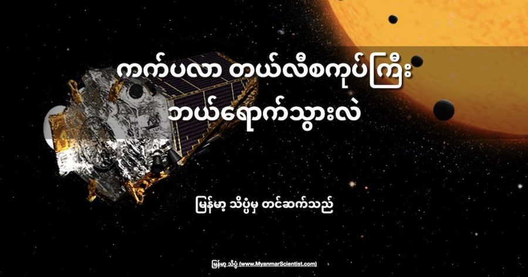

ကက်ပလာ အာကာသ တယ်လီစကုပ်ကို ကျွန်တော်တို့ “သိပ္ပံ” ရဲ့ အာကာသ ဆောင်းပါးတွေကို ဂရုတစိုက် ဖတ်ရှုကြတဲ့ သူတွေ မကြာခန ဖတ်မိကြမှာ ဖြစ်ပါတယ်။
အထူးသဖြင့် နေ အဖွဲ့အစည်းရဲ့ ပြင်ပက Exoplanet လို့ခေါ်တဲ့ ပြင်ပဂြိုဟ်တွေ (အခြား ကြယ်တွေကို ပတ်နေတဲ့ ဂြိုဟ်တွေ) အကြောင်း ရေးထားတဲ့ ဆောင်းပါး အများစုမှာ ဒီ ကက်ပလာ အာကာသ မှန်ပြောင်းကြီး အမည်ဟာ မကြာခန ပါနေကျ အမည် ဖြစ်ပါတယ်။
ဒါဆို အခု ဒီ ကက်ပလာ အာကာသ မှန်ပြောင်းကြီး ဘယ်ရောက်နေလဲ။ ဆက်လက် အလုပ် လုပ်နေ တုန်းပဲလား။ ဒါမှ မဟုတ် ပျက်စီး သွားပြီလား။ ကမ္ဘာပေါ် ကိုပဲ ပျက်ကျ သွားပြီလား။
ကက်ပလာ အာကာသ တယ်လီ စကုပ်ကြီး ကနေ ရှာဖွေ ပေးခဲ့တဲ့ ပြင်ပဂြိုဟ်ပေါင်းဟာ မနည်းပါဘူး။ Kepler-452b တို့ Kepler-4b တို့ ဆိုတဲ့ ပြင်ပဂြိုဟ် တွေရဲ့ အမည်တွေ ကိုလဲ ရံဖန် ရံခါ ဖတ်ဖူး ကြမှာပါ။ ဒီလို ကက်ပလာ အမည်တပ် ပြင်ပဂြိုဟ်ပေါင်း ကလဲ မနည်းလှ ပါဘူး။
ဒီ ကက်ပလာ တယ်လီ စကုပ် ကြီးကို ၂၀၁၈ ခုနှစ်မှာ အနား ပေးခဲ့ ပါပြီ။ ဒါဆို အခု ဒီ တယ်လီ စကုပ်ကြီး ဘယ်ရောက် သွားပြီလဲ။ ကမ္ဘာပေါ်ကို ပြန်ပြီး ပျက်ကျ သွားပြီလား။ ဒါမှ မဟုတ် အာကာသထဲ ဆက်ပြီး လွင့်မျောနေ ဆဲပဲလား။
၂၀၁၈ ခုနှစ်က အနားပေးလိုက်ပေမယ့် ဒီ ကက်ပလာ တယ်လီစကုပ်ရဲ့ အရှိန်အဝါ ကတော့ သေမသွား သေးပါဘူး။ သူက ရှာဖွေ ပေးခဲ့လို့ ပြင်ပဂြိုလ်တွေ ရဲ့ အကြောင်းကို ကျွန်တော်တို့ အများကြီး ပိုသိလာ ခဲ့ရပါတယ်။ ဒီ ဂြိုဟ်တွေ အပေါ် ကျွန်တော်တို့ရဲ့ အမြင်တွေ အယူအဆ တွေကိုလဲ အများကြီး ပြောင်းလဲ ပေးနိုင် ခဲ့ပါတယ်။
ကက်ပလာ တယ်လီ စကုပ်ကြီးကို နာဆာကနေ ၂၀၀၉ ခုနှစ်မှာ လွှတ်တင် ခဲ့ပါတယ်။ အဲ့သည် အချိန်က ပြင်ပဂြိုဟ် လေ့လာရေး ဟာ အစပျိုး ကာစပဲ ရှိပါသေးတယ်။ အခုခေတ်လို နက္ခတ် လေ့လာရေးမှာ ရှေ့တန်းရောက် နေတဲ့ ကာလမျိုး မဟုတ်သေး ပါဘူး။
အဲ့သည် အချိန်က လွှတ်တင်ခဲ့ရတဲ့ ရည်ရွယ်ချက် ကတော့ ကမ္ဘာပတ် လမ်းကြောင်းထဲ မှာ ပြင်ပဂြိုဟ် ရှာဖွေရေးကို အထူး သီးသန့် ပြုလုပ်မယ့် တယ်လီစကုပ် တစ်လုံး လွှတ်တင်ဖို့ပဲ ဖြစ်ပါတယ်။
အဲ့သည် အချိန်ကတော့ အတော်လေး ရည်ရွယ်ချက် ကြီးမားတဲ့ စီမံကိန်း တစ်ရပ်ပေါ့။ ဒါပေမယ့် ဖြစ်လာတဲ့ အခါမှာတော့ မူလ မျှော်မှန်း ထားခဲ့တာထက်ကို အများကြီး ပိုမို အောင်မြင်ခဲ့ပါတယ်။
ကက်ပလာ တယ်လီ စကုပ်ကြီး လွှတ်တင်တဲ့ ၂၀၀၉ ကနေ အနားပေး လိုက်တဲ့ ၂၀၁၈ ထိ ကာလ အတွင်းမှာ မူလ မျှော်မှန်း ထားတာထက် ကျော်လွန်ပြီး စုစုပေါင်း ပြင်ပဂြိုဟ်ပေါင်း ၂,၆၀၀ ကျော် ရှာဖွေ ပေးနိုင် ခဲ့ပါတယ်။
ဒီ စီမံကိန်းက လုံးဝ စင်းလုံးချော အဆင်ပြေ ခဲ့တာတော့ မဟုတ်ပါဘူး။ အခက်အခဲ တွေနဲ့လည်း ကြုံတွေ့ခဲ့ ကြရပါတယ်။
ဥပမာ လွှတ်တင်ပြီး ၄ နှစ် အကြာမှာ စက်မှုပိုင်း ဆိုင်ရာ ချွတ်ယွင်းမှု ကြီးတစ်ခု ကြုံတွေ့ခဲ့ ရပါတယ်။ ပြန်ပြင်ဖို့ မဖြစ်နိုင် တာမို့ ဒီ ချွတ်ယွင်းချက် ရှိနေပေမယ့် ဆက်ပြီး အလုပ်လုပ် နိုင်အောင် အင်ဂျင်နီယာတွေ က ကြံဆပြီး ကျော်လွှား နိုင်ခဲ့ ကြပါတယ်။
“ဒီ စီမံကိန်း စတင်ခဲ့တာ လွန်ခဲ့တဲ့ ၃၅ နှစ်က ပေါ့။ အဲ့သည် အချိန်က နေ အဖွဲ့အစည်း ပြင်ပမှာ ဂြိုဟ်တစ်စင်း တောင်မှ ရှာမတွေ့ သေးပါဘူး” လို့ ဒီ စီမံကိန်းကို စတင်ဦးဆောင် ခဲ့တဲ့ ဝီလီယံ ဘိုရပ်ကီ (William Borucki) က ပြန်ပြောင်း ပြောပြပါတယ်။
“အခုတော့ ပြင်ပဂြိုဟ်တွေ နေရာတိုင်းမှာ ရှိတယ် ဆိုတာ သိရပြီလေ။ ကက်ပလာ တယ်လီစကုပ် ကြီးဟာ ကျွန်တော်တို့ တွေရဲ့ အနာဂါတ် မျိုးဆက် သစ်တွေ အတွက် ကျွန်တော်တို့ ဂလက်ဆီကို စူးစမ်း လေ့လာဖို့ အာမခံ ချက်တွေ ပြည့်နေတဲ့ လမ်းကြောင်းပေါ် တင်ပေးခဲ့တာပါ” လို့ သူက ဆက်ပြောပါတယ်။
တဖြည်းဖြည်း နဲ့ ကက်ပလာလဲ လောင်စာဆီ ကုန်သွားပါတယ်။ လောင်ဆာ ကုန်သွားတော့ သူလဲ ဆက် အလုပ် မလုပ်နိုင် တော့ဘူးပေါ့။ ဒါတောင်မှပဲ နက္ခတ် ပညာရှင် တွေအတွက် နောက်ဆုံး မိနစ်ပိုင်း အထိ တန်ဖိုးရှိတဲ့ အချက်အလက်တွေ ဆက်ပြီး ထောက်ပံ့ ပေးနိုင် ခဲ့ပါတယ်။
သူ့အရင် ကက်ဆီနီ (Cassini) တယ်လီ စကုပ်ကြီး လို ကမ္ဘာပေါ် ပြန်ကျပြီး မီးလောင်ကျွမ်း သွားတာမျိုးတော့ ကက်ပလာ မကြုံတွေ့ ခဲ့ ရပါဘူး။ ဒီ့အစား သူ့ကို အနားပေးတဲ့ အချိန်မှာ သူ့ရဲ့ ကွန်ပြူတာ စနစ်ကို ပိတ်ပြီး အာကာသ ထဲမှာပဲ ဆက်လက် လွင့်မြော နေနိုင်အောင် ဖန်တီးပေး ခဲ့ကြပါတယ်။
ကက်ပလာ တယ်လီ စကုပ် ကြီးကတော့ အနားယူသွားတာ အခုဆို ၄ နှစ်တောင် ကြာခဲ့ပါပြီ။ ဒါပေမယ့် သူ ရှာဖွေ ပေးခဲ့တဲ့ အာကာသ အချက်အလက် တွေကတော့ အခုထိ သိပ္ပံ ပညာရှင်တွေ အကုန်အစဉ် မလေ့လာရ သေးပါဘူး။
ကက်ပလာ ရှာဖွေ ပေးခဲ့တဲ့ ထောင်ပေါင်းများစွာသော ပြင်ပဂြိုဟ် တွေနဲ့ ပါတ်သက်တဲ့ အချက်အလက် တွေကို ယခုအခါ လူတိုင်း လေ့လာနိုင်အောင်လို့ အင်တာနက်မှာ တင်ပေး ထားပါတယ်။ ဒီ အချက်အလက် တွေကို လေ့လာလိုတယ် ဆိုရင် Barbara A. Mikulski Archive for Space Telescopes မှာ မည်သူမဆို လေ့လာနိုင်ပါတယ်။
ဒီ အချက်အလက် တွေကို အသုံးပြုပြီး ယခုထိ ပြင်ပဂြိုဟ် တွေနဲ့ အခြား အာကသ ဆိုင်ရာ အရေးပါတဲ့ တွေ့ရှိချက် တွေကို ဆက်လက် တွေ့ရှိနေဆဲ ဖြစ်ပါတယ်။
ကက်ပလာ တယ်လီ စကုပ်ကြီး အနားယူ သွားခဲ့ ပေမယ့် သူ့ရဲ့ နက္ခတ်ဗေဒ လေ့လာမှု အပေါ် သက်ရောက်တဲ့ အကျိုးကျေးဇူးကတော့ ရပ်ဆိုင်းသွားခြင်း မရှိသေးပဲ ဆက်လက် တောက်ပ နေဆဲ ဖြစ်ပါတယ်။
Reference: Whatever Happened To The Kepler Space Telescope? | Slash Gear
ကက်ပလာ တယ်လီစကုပ်ကြီး ဘယ်ရောက်သွားလဲ

March 7, 2022
Other Posts
- နယူတန်ရဲ့ ဆွဲငင်အားနဲ့ အိုင်းစတိုင်းရဲ့ ဆွဲငင်အား ဘာကွာလဲ
- ပင်လယ်ထဲကို ဆားတွေ ဘယ်ကရောက်လာလဲ
- နေအဖွဲ့အစည်းရဲ့ နယ်နိမိတ်ကို ရှာဖွေခြင်း
- သမုဒ္ဒရာ ကြမ်းပြင်က ပင်လယ်ရေအောက် ရေတံခွန်ကြီး
- လူတိုင်း ဖတ်သင့်တဲ့ အာကာသနှင့် စကြာဝဠာ ဆိုင်ရာ စာအုပ် ၁၀ အုပ်
- ဆုကြေး ဒေါ်လာ ၁ သန်းပေးမယ့် နာဆာရဲ့ ပြိုင်ပွဲ
- ဓါတ်ခွဲခန်းမွေး အသားကို စီးပွားဖြစ် ထုတ်လုပ်မယ့် အစ္စရေး
- သင့်ကလေး စာဖတ်ချင်စိတ် ဖြစ်လာအောင် ဘယ်လိုပြုစုပျိုးထောင် ပေးမလဲ
- အမြှီးပါသော ရှေးဟောင်း ပင့်ကူမျိုးစု မြန်မာပြည်တွင် ရှာဖွေတွေ့ရှိ
- ကမ္ဘာဆီ တည့်တည့်ချိန်ရွယ်လာတဲ့ Black Hole ကြီး